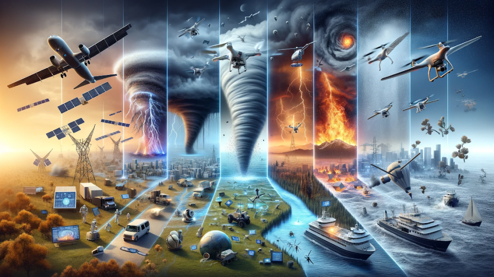

AI as Humanity's Guide in Facing Nature's Forces
In 2023, as Hurricane Elara ravaged coastal towns, a new, unexpected champion emerged Artificial Intelligence (AI). This surge in storms, floods, and disasters worldwide serves as a stark reminder of our evolving climate. Amidst these challenges, AI has become an indispensable ally, reshaping our strategies for both preparing and responding to nature unpredictable forces.
2023: The Year AI Revolutionized Disaster Response
AI has risen as a formidable force against climate change. Like a master chess player, it analyzes immense datasets from weather models and satellite imagery to offer invaluable insights. This analytical prowess aids in identifying vulnerable regions, helping us fortify them against future uncertainties. AI data-driven approach is not just about prediction but preparation, marking a paradigm shift in our climate resilience strategies.
AI as a Guiding Light in Understanding Climate Change
AI has risen as a formidable force against climate change. Like a master chess player, it analyzes immense datasets from weather models and satellite imagery to offer invaluable insights. This analytical prowess aids in identifying vulnerable regions, helping us fortify them against future uncertainties. AI data-driven approach is not just about prediction but preparation, marking a paradigm shift in our climate resilience strategies.

AI as Our Early Warning Whisperer
AI serves as a vigilant guardian, revolutionizing early warning systems. Its advanced algorithms don’t just signal impending dangers; they provide a detailed forecast of potential impacts. This precise information was instrumental in optimizing the response strategies during the California wildfires, where AI systems significantly enhanced the efficiency and resource deployment of firefighting teams
AI in Predicting Risks and Facilitating Recovery
AIsrole spans the entire disaster management spectrum. It predicts extreme weather events, creates hazard maps, and assists in real-time decision-making. Post-disaster, AI swiftly evaluates damages, streamlines resource allocation, and designs recovery plans. A notable example is its ability to analyze satellite images for rapid assessment of infrastructural damage, thereby accelerating the response process. Moreover, AI continuous learning from these events further refines early warning systems, preparing us better for future challenges.
The Future Brightened by AI
Looking forward, AI stands not just as an alarm system but as a sophisticated tool for understanding and adapting to evolving risks. Its enhanced weather predictions and emerging technologies like AI-driven flood modeling promise to redefine our approach to natural disasters, making them more manageable and less catastrophic.

AI Our Ally in Managing Disasters
AI is role in mitigating nature wrath extends beyond early detection. It is an invaluable partner in both effective disaster response and efficient recovery, becoming increasingly essential as we confront the complexities of climate change. AI is more than a technological leap; it is a testament to human ingenuity and resilience. Each success story, like the one during Hurricane Elara, is a beacon of hope, showcasing how we can coexist with and adapt to our dynamic environment.